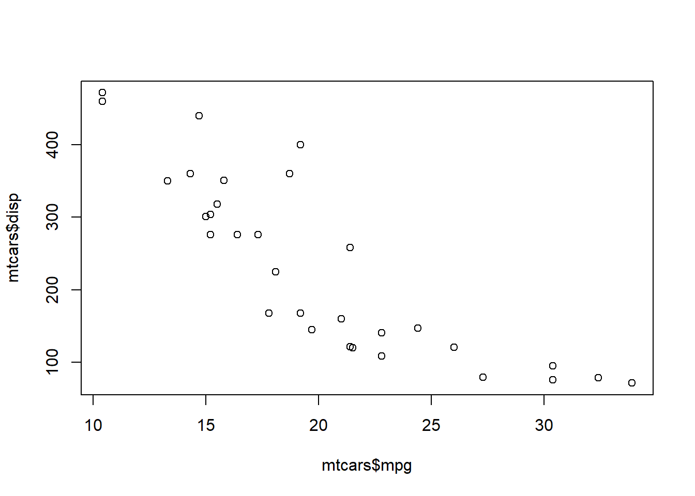

The biggest challenge when I opened the folders in the demo folder is naming of various files. It has made the modification very difficult because it’s hard to know and remember what you’re actually modifying. Here is an example about what I’m talking about.
The biggest challenge when I opened the folders in the demo folder is naming of various files. It has made the modification very difficult because it’s hard to know and remember what you’re actually modifying. Here is an example about what I’m talking about. The biggest challenge when I opened the folders in the demo folder is naming of various files. It has made the modification very difficult because it’s hard to know and remember what you’re actually modifying. Here is an example about what I’m talking about.
The biggest challenge when I opened the folders in the demo folder is naming of various files. It has made the modification very difficult because it’s hard to know and remember what you’re actually modifying. Here is an example about what I’m talking about.
The biggest challenge when I opened the folders in the demo folder is naming of various files. It has made the modification very difficult because it’s hard to know and remember what you’re actually modifying. Here is an example about what I’m talking about.
some R code
head(mtcars)## mpg cyl disp hp drat wt qsec vs am gear carb
## Mazda RX4 21.0 6 160 110 3.90 2.620 16.46 0 1 4 4
## Mazda RX4 Wag 21.0 6 160 110 3.90 2.875 17.02 0 1 4 4
## Datsun 710 22.8 4 108 93 3.85 2.320 18.61 1 1 4 1
## Hornet 4 Drive 21.4 6 258 110 3.08 3.215 19.44 1 0 3 1
## Hornet Sportabout 18.7 8 360 175 3.15 3.440 17.02 0 0 3 2
## Valiant 18.1 6 225 105 2.76 3.460 20.22 1 0 3 1plot(mtcars$mpg, mtcars$disp)